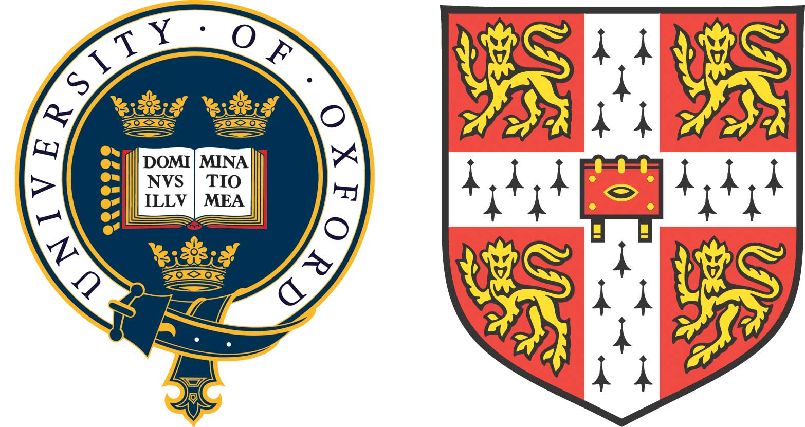

牛剑申请指南
全文9k+字全部手打。感谢所有小伙伴的帮助！记得右上角转发朋友圈和收藏哟！
总策划：余量
作者：Yuki，Joanne，吕诗睿，牛津风，Paris，罗爸，刘一方，牛津舜，憋体，蛋泥，Rex，黄嘉文，Leonard
校对：Leonard
排版：Leonard， 刘一方

Timetable
- A1国际考前：准备国际考
- A1国际考之后：PS初稿完成
- A1暑假：准备PS素材（e.g.实习、看学术书籍）完成PS初稿
- 8/9月份：搞申请 改PS 准备面试
- 拖延症也不着急，反正我开学才开始想怎么写ps，毕竟暑假之前既没有看过书也没有实习
- 最好10月之前提交而且开始搞签证，找旅行社可以省很多功夫
- 英国签证一定要趁早办,早在面试结果出来之前，因为有被拒签的可能性
- 8/9/10月份：修改PS 提交申请 准备MAT/PAT/TSA准备面试
-
呃今年申请剑桥工程经济自然科学面试前也有笔试了 好像是2016年11月2日 志在剑桥的霸霸自己关注一下
- 11月：月初完成笔试 继续准备面试
- 12月：牛剑的面试基本都在12月中
- 1月：出申请结果
- 有余力的可以在准备期间顺便把雅思过了
G1 G2
- 学好英语！
- 基本就是多玩 多参加社团或者活动 多点技能点还是没错的 这样选择专业的时候会少走很多弯路。如果你不知道自己对金融商务领域是不是感兴趣，你就可以参加bpc和金融社的商务实践大赛;你不知道自己对教育领域是不是感兴趣，你可以加入English teaching club每周末去教教小朋友英语。
- G1G2的时候可以先把义工义教之类的东西先做了，之后A年级忙的时候就不需要再担心了（虽然英国好像不是很看重）
- 有人申教育？讲道理G1G2就应该怎么开心怎么过
- 最理想的情况是用G1或者G2的时间确定下来自己之后会从事哪个领域的工作，这样就可以提前在这个领域多做一些准备工作，比如说多看一些相关的书籍或者多在相关领域实践。然后A1一整个学期你就可以一边继续做这些准备工作一边全力准备国际考。A2就忙申请就可以了
- 可能直接确认专业对于G1G2的人来说略微早了，但是在这个时期起码你要先定下来文理科，喜欢并擅长的科目。牛剑官网有推荐书单可以阅读。
- G2国际考还是要好好考，严肃对待，这样就不至于再去准备重考然后担心自己的成绩。虽说英国大学对G年级国际考看得没有A年级那么重，但是一份全A*的成绩单肯定是你不能拒绝的。
- G2好好考为余量霸霸的观点 像我这种不求上进的人觉得其实考的一般也无所谓....
- +1
- 上面是G年级全部A*的李予嘉神的肺腑之言
- 我考as数学的时候睡着了拿了个b
- 光刷啪呸不够吧 不要觉得啪呸刷完了就稳了 最好还是多看书 注意每个知识点 毕竟不一定每个知识点这些年都考过 而且syllabus一直在改
- 着重对待G2那一年的数学考试（因为是国际考）
- 不能老是看电影浪费时间啊，有时间多看看英文杂志看看英文书。推荐一个公众号Ecoupdate，经济学人杂志的更新你值得拥有。下面是二维码（长按图片扫描二维码）：
- 让余量霸霸来用自己的亲身经历再来强调一下这一点的重要性。（并不是霸霸 - -）
不管是文科还是理科，阅读能力就会有很大的提高 吸收外文信息的能力会强很多 我认为经过在果胶的学习，不管是理科还是文科，使用学术英语的能力一定不会差。你可以很轻松地和外国教授或者同学讨论学术问题，但是你总得聊点别的吧。而这恰恰是最难的。我们自己平时和同学扯淡的时候肯定是天南地北地扯，而且用的句式基本都不是标准句式。和外国人扯淡同理。我自己在去面试的时候就有深刻感觉，和外国人交流简直就很痛苦。首先你们两个想说的东西大概不在一条线上，其次他或许还得费劲来听懂你的表达方式究竟是什么意思。这种时候能有一个熟练的表达方式一定是占优势的。
- 这大概就是为什么面试官基本放弃了与我进行学术之外的交流OTZ
- 专业书尽量啃英文的，专业词汇的发音可以尽量记一下。还有多阅读，最好报一些MOOC的课程,上一些名牌大学的专业公开课，除了认真学还可以试着拿个证书啥的，这样会比较有说服力。功利角度来说，MOOC的网站个人首推Coursera，FutureLearn的证书不认证，edX需要翻墙会很麻烦。
- G年级的时候雅思就可以试着准备一下了，能过就尽量早过吧，不然后面总会感觉时间不够用（不要问我为什么知道）
- +1
- 不过是a1之后再考过4个7 ，因为雅思只有两年时效
A1
- 考好国际考。理科刷趴呸就行了别想其他的。如果刷完趴呸还没事情做的话就整理各个学科的知识点吧。物理化学都可以对照着syllabus一个一个点地整理知识点。建议准备一个错题本，考前复习非常管用。
- AS国际考考好了还有一堆令人抓狂的准备，但考不好连抓狂的资格都没有，敲门砖一捏就碎的话，再看十篇余量爸爸的tips都没用的朋友们：)
- 对照Syllabus整理知识点很有效，但很耗时间，理科刷题建立在自己理解大部分知识点的情况下，否则你刷一道题看一下答案不如先去过一遍知识点有效
- 万不得已可以放弃英语
- 我first language英语D哦
- 并且这位学长不用要求雅思 - -
- 我建议直接放弃英语准备雅思。
- 如果选了CS的话，一定一定一定要对着syllabus复习，每一条都要仔细过，不会的就自己上网查。
- 慎选AS英语。有学姐被要求了AS英语的con。对于文科这种换一个人改就换一个grade的东西。并且除非是像罗家仁这样的爸爸，别选历史或地理，因为很难很难，比其他科目加起来都难，而且师资和资料都跟不上～
- 国际考还想讲一讲remark和retake。两个都不推荐。首先这很耗费精力，retake的时间和申请季重叠，一边准备retake的内容一边准备申请材料和面试本身就是一个难题，更不要说心理压力有多大，出来的成绩好坏也没有保障。而且retake的成绩基本是要等到一月份才能出来的。那个时候都快要到UCAS报名的截止日期了。出来的成绩不理想也是白搭。除非是那种成绩和平时出入特别特别大的，比如说EOS考A但国际考考C的人。
- A1还有挺多学科竞赛可以参加的，别犹豫多参加。这种可以写进PS里的东西别放过。
- 滑铁卢什么的可以参与一下
- 还有Physics Bowl， UK Senior Mathematic Challenge
- 但是如果学科考试没准备好的话，先准备学科考试。学科竞赛不是一朝一夕可以达到顶尖水平的，并且不是顶尖的学科竞赛成绩对于大学申请没有太大的作用。相比之下，用同等的时间把国际考试考到每一门90分以上要容易许多。
Personal Statement
- 建议国际考前打一个草稿，写一个提纲。如果和tutor见过面的话应该会知道一个大概的框架，然后牛津剑桥的官网有PS怎么写的介绍，以及面试的介绍。这些东西我都会放在网盘（密码：675a），大家任取。
- PS不要吹逼，面试很有可能戳破（虽然好像也没有负面影响，但是很尴尬）PS写的实习经历啊竞赛啊支教啊看了什么啊什么的和自己的科目最好扯上关系。
- 可以谷歌一下UCAS PS，然后多读几篇专业相关的PS拓宽思路。 另外PS建议写得言简意赅一点，用词一定要准确，毕竟只要申请的不是英语文学系语言不优美什么的不会扣分。
- 如果还没有决定下来自己究竟选哪个学科的话就要到大学官网上面去看看具体的typical offer以及course description之类的。除了大学官网之外还有UCAS的网站，上面有一个course selection的选项，里面有各种各样的大学course的代码查询以及typical offer和基本的一些信息。当然最重要的是官网的信息。可以开始看官网了。如果没有VPN的话可以考虑用psiphon，安装包我也会传到网盘
（密码：675a）。
- 如果是数学科目的话，请做一些数据分析
- typical offer有时候也别太当真 余量霸霸的帝国化学教你做人
- 没错我就是那个typical offer 讲明最高con是A*AA但是依然被要求A*A*A的人
- 学习工科和商科的人可能会希望用这个暑假去工厂实习。如果能在PS里提到你的实习是很有竞争力的。
- 学science的暑假也可以去一些实验室打打杂，有条件的话，还可以写篇论文啥的，放在PS里妥妥的亮点
- 以现在的水平，实习也学不到真材实料，所以实习主要还是以感受这个专业的魅力和体现心中对它的爱为目的！所以！千万别塞一些你自己也搞不懂的东西进PS！自己挖的坑只能跪着吃土：)
- 自己挖的坑 含着泪面试前也要填完 然而像我这种没挖坑的也有点尴尬 不知道该准备什么
- 关于PS 个人觉得不能像列个清单一样说我读过哪些书，我得过哪些奖，这些都非常的片面。一定要讲自己对这门课的理解与感悟。当然还有热爱啦，比如读了哪些书，做了什么实习，适当的列举是有必要的。但还是要说自己真正学到了什么，可以试试自己深入了解一下学术上一个特定的有争议的问题，然后试着看几篇关于这个方面的论文，然后在这个学术问题上发表一下自己的见解。不需要太完美的观点，不然教授也不用教你了是吧？当时我就在PS里讨论了high pi和high recombination rate之间的关系的两个解释（对对对 写得时候可以假设招生官读过这本书，然后直接说自己学到了什么/对书中的观点有什么看法）
Cambridge and Oxford
- 剑桥比牛津难
- AS小分高的推荐剑桥，是真的比较有优势。听说Churchill College就是分控。（今年剑桥Churchill College Computer Science 10：1的录取率。谨慎选择。）一般最高三门均分大于等于93就可以考虑剑桥了，牛津是看不到小分的哦。
- 但是有说法tutor会在reference里面提到，所以不想作死的话还是国际考考好
- 但是今年最高三科没到93也有申到剑桥的 所以小分没那么高也可以尝试剑桥哦
- 剑桥学费便宜啊，牛津一年学杂费加生活费要40w我真的要哭了
- 比如说我，生物小分没上90还是作死申了剑桥的生物orz
- 然后还轻松地上了orz
- 牛剑党还需要选学院了。眼花缭乱的学院挑死你。牛津的话建议以生活需求为主，比如说地理位置，交通设施，学院住宿等等
（最重要就是问问学姐学长这个学院对于那些在国交读够3年要不要求雅思…）（雅思毕生痛）学院官网多去逛一逛 student room也有很多关于学院的比较 有条件的人可以趁这个暑假去牛剑的open day转一转，实地考察的效果会更好。这个暑假就定好，开学绿木说要选学院的时候就可以去选（qiang）了。
- 我这个不求上进的人又来了 我就是直接选了个排名不是很前的学院........
- 霸霸你说笑了
- 讲真，选学院的话个人建议选择在你要申的专业里有中国爸爸的学院，这个还挺加印象分的！还有的学院不太喜欢中国人就不要凑脸上去给抽了...具体可以找在牛剑就读的学长学姐咨询一下：)
- 强烈同意
- 选学院是比较看脸的事情，说是随意选之后也会看见学院和学院是有区别的（而且这一切一开始无从知晓）
- 牛津学院很多学术差别都不大，但剑桥学院还是有学术差别的，所以可以根据学术排名来选学院，比如trinity就总是很厉害对吧。而且不同的学院是有不同的要求的，有些可能会多笔试之类的， 所以申请的时候看清楚。
Journey to the Interview
- 订机票这种东西还是等面试结果出来之后再决定吧，浮动不会很大。建议买中转的机票，省很多钱。我去的时候是阿联酋的中转机票，来回六千出头这样子。虽然听说有人坐南航来回也只要七千... 机票直接去官网订，阿联酋的官网还是比较人性化的。另外的廉价机票可以选择维珍（虽然最近爆丑闻）德国汉莎，韩亚航空之类的。这里有一个网站可以参考。https://www.kayak.com.hk （伙食肯定香港国泰最好）
- 没满18的同学们赶紧找一个成年同学带着你飞吧。不过好像可以以家长签确认书的形式自己申请。（未满十八岁一个人申请容易悲剧，让家长带你去成功率大大提高。）详情请咨询旅行社或者自己上网查。
- 酒店什么的建议抱团。不同学院的待遇不一样，有些富豪学院直接包了你全程的食宿而有些就只有面试前后一天的冗余。牛津富豪学院e.g. Jesus College, Oriel College。剑桥的好像更惨，只提供了当天的食宿，一天都不给多待的。
- 没有的事，peterhouse给了5张餐卷，还提供免费住宿，免费热水,免费wifi，欢迎大家选Peterhouse，Cambridge！
- Peterhouse 还可以申请怡和基金的奖学金哟。全额啊！
- Fitzwilliam一天的住宿都不给啊！！天天住酒店啊！不过觉得酒店还是订在市中心比较好 去哪儿都方便 想到我订了个比较偏的.....说多了都是泪阿
- 学院和学院之间的差距开始显现了 ：)
- 不用买当地的电话卡，机场，大巴一直有WiFi上网，到学院或者酒店也都有WiFi。如果你不是到其他地方玩的话不用浪费这个钱。
- 我是直接租了个Wi-Fi
- 学院有个毛线wifi[微笑]3G视频聊天不要怂就是干。还是买张电话卡比较好万一赶上没wifi的学院…
- 看到了么这就是学院和学院之间的差距
- 强烈建议单人出行的同学们买无限流量电话卡，没有google map你在英国很难找到地方
Admission Tests
- Sixth Term Examination Paper(STEP):一个很难的数学考试，申剑桥会用到。给大家一个超级详细的链接，里面有你应该知道的所有东西。这里包括了如何准备STEP，所有的Past Paper和其他资料打包下载还有很多经验和技巧。超有用STEP链接（需要VPN）
- Thinking Skill Assessment(TSA):
- TSA是牛津Psychology, PPL(Psychology, Philosophy and Linguistics),PPE(Philosophy, Politics and Economics), E&M(Economic&Management)面试前都要参加的考试，其中Psychology和PPL通常要60+才能进面试，经济类通常64+才能进面试。这个最好刷到越高越好。我申psychology进了面试但是被拒牛津官方的反馈是 did well in interviews at both colleges, above average in TSA, howerver this is Not enough...,
- TSA有两张卷子，第一张单项选择题，有50题，一半是problem solving（应用题）另一半是critical thinking（文字逻辑）。第二张是一篇作文，30分钟完成，题目大题有哲学，经济学，法律，个科学方法学四类，四选一。
- 绿木在A2开学可能会开个tutorial教写作，一般就是直接写然后给他看，他会给你提出超级棒的建议，虽然会被嘲讽一顿写的什么鬼（我被他挑了10个语法错误）。这个写作有点像雅思，但更注重你的thinking skills，也就是你如何组织语言和逻辑
- 还有有个挺绝望的事情，网上有官方啪呸，但是不用刷太多，一般刷3套的成绩就是你最终的成绩了。。如果很想多练的话可以找Xtreme papers cie 的thinking skill 做。里面有很多problem solving的题。
- Physics Aptitude Test(PAT):
- PAT是申请牛津物理、工程和Material Science面试前要参加的考试，一共两个部分：Maths和Physics，各50分。历年拿面试的threshold差不多都是70差一点，具体的数据Cress在GT班上会讲。
- 建议预习A2的内容，因为所有PAT里没接触过的topic在考完PAT之后都会讲...
- Mathematics Aptitude Test(MAT):MAT是牛津和帝国理工的数学考试，计算机系和数学系的要考这个考试
分为选择题和大题，每个学科要完成自己被要求的大题，数学系做的题基本是纯数学，Computing部分大部分是逻辑题
考试和PAT同时间，在11月份
MAT 难度低于STEP，但难度还是不低，建议靠前读完FURTHER PURE，也可以看看普高数学
MAT的题目最重要的是要找解题点，实际上只要找到那个思路，它用到的知识点基本都是学过的东西
所以更重要的事情是刷题，积累题目的解法，还有就是要掌握解题速度，一些题型做两次就熟悉了
MAT的题找GT班老师都会给
微积分和代数会有很恶心很变态的题
有的题目会有庞大计算量，最好认真检查一下
Interview
- 面了三场面试，每一次都是进去就直接问学术问题的。不过也有不一样的地方，有人进去的时候被问了半天PS的问题。有可能是因为这个人的PS的内容正好是教授感兴趣的部分。所以建议在去之前好好补PS的坑。好好想想PS里什么东西有可能会被问到。（PS一定要熟悉，不然问到了又不会的话会有抄袭或他人代写的嫌疑，非常严重的！）
- 剑桥上海面试是大学统一安排的，所以面试的形式和学院官网上面的会不一样。一般除了数学系以外都会要求考TSA，面试一般只有一场。面试官也不一定是来自你申请的学院或者你申请的专业。一般会是接近的专业，比如说我申请计算机，数学系的教授面试我。准备TSA 剑桥的话就是刷题，做很多的题目。我是早上考了TSA选择题，外加一篇essay。Essay是和你申请的专业有关的，每个专业的题目不同。一般都会是和本专业相关的。有很多个题目（五个左右）可以选择。我写的是“计算机和工程的联系”。还有一些其他的题目，都是类似这样的记不太清楚了。。。
- 每个学院都有一个叫做JCR的屋子，里面常年有学院的大学生可以提供帮助，你查询面试信息也是在这里。
- 有些学生会有ADDITIONAL INTERVIEW，一开始不告诉你的，你每天都去一趟JCR查询看有没有ADDITIONAL INTERVIEW，不要一考完就觉得没事了，因为那有可能是你的机遇
- 一般都会有第二学院的面试，推荐在考前先去摸到第二学院的位置
- 绿木到时候应该会在FTP上面上传各个学科的牛剑面试题，可以做个参考。如果FTP上没有的话我也能上传网盘（密码：675a）。
- 所有科目都强烈建议预习A2的内容，这个事情可以放到暑假去做。好好练习语言表达能力，平时给别人讲解题目的时候就可以用英语来锻炼自己的思维能力。最好有一个理性的逻辑的解题思路，这样就可以好好地告诉面试官你在想什么。面试课不必考虑，只要你会做题，国交教学保证你一定能好好说出来。十几节课也是很烧钱的（1000一节）。我敢保证教授们都特别特别nice，如果你卡壳了他们会想办法引导你而不是给你设置障碍，
所以一定把你最真实的一面展现给他们看。
- 数学也建议预习further，我的面试里数论占很大比重，另外也会考到作图能力
- 工程的好好练sketch the graph!!!应该算是必考了吧
- 经济面试准备
- Game theory好好学，剑桥很看重，因为他们觉得这可以考验一个学生的思维能力
- curve sketching也是常考的，建议下载一个画图app，在面试前练练。
- 申请经济对数学能力看的很重，尤其是微积分在经济学中的应用，Jenny GT班对这方面有帮助
- 关心时事，多看看economist，面试前建议每期都看
- 建议提前一段时间到学院候场，跟其他申请者聊聊天可以缓解紧张情绪
- 面试要会说你在想什么。比如数学，这道题是不是能做出来并不重要（当然做出来最好...）一定要一直不停地说思路。这个准备的时候练一练，题目难的话也不要怕，因为教授肯定会push you 冷静答题就可以了。
- 如果申自然科学的话，要相信面试的时候所有问题都可以通过common sense+A1 A2学的知识回答，逻辑是关键
- 面牛津的工程的时候感觉G&T比面试难，毕竟上G&T已经上到怀疑人生了，要冷静还挺难的，只能建议尽力think aloud…ps：过一遍物理G&T推荐的书有利于盲目增强自信呢
- 教授看你一卡就想提醒你，所以你一定要跟上节奏
- General question不用准备太多，academic的题目更多一点
- Chemistry的面试包括inorganic/organic/physical三大块，所以准备过程中一定要三个领域都准备好。除去上述的tips以外，一个非常容易被忽略的点！是！数学！！你没有看错，数学！在化学面试中也是很重要的，尤其是physical chemistry中可能会被问到公式的演变或者直接让你画出表达式的图像。（+1 我牛津面试有一题专门让你推导微分的形势然后解turning point）一般不会太难，但平时做数学的时候最好要注意用英语表达解数学题的过程。准备面试过程的多多画图，有的面试官就算知道你能口述，也会让你在纸上边画边说。
- 剑桥大学如何决定是否录取和pool：均分93分以上如果没有被学院录取，剑桥一定会放你进pool，之后就看有没有学院要你。93以下有可能直接被脆拒，没有进pool的机会。学校会看两部分：academic record和interview。Academic record包括：AS成绩，G年级成绩（如果有的话）,推荐信。Interview：面试的表现，Admission test（STEP（剑桥数学笔试）, CSAT（计算机笔试）, TSA（Thinking Skill Assessment 文科或者上海面试的人会要求考的）, etc.）。然后你都表现的很好就录了。
- 被拒了怎么办？1、去second choice 2、重申。第一个选择就没什么可说的了。你就去咯。重申就用A-Level的成绩重新申请，这样申到了也没有A-level的condition。但是需要重新走一遍申请季以及担着“成为学弟”的风险。如果不是非牛剑不可的话就没什么必要。谨慎选择重新申请，有悲剧两次的可能。
IELTS
- 提前准备雅思
- 牛津的政策是如果你在面试之前提前接受了两年以上的全英文教育并且下一年还将继续，有资格被学院考虑免除雅思四个七的condition。也就是说如果你是G1G2入学的，选择牛津有可能不用考雅思。我们有G2老生被要求也有没有被要求的。不管怎样你都要提前准备雅思，争取能在次年寒假之前考出来。这样会省去很多麻烦。
- 我就是个悲惨的案例
- 我学院已经拖了我两个月不给准信要不要求雅思了...早点过总归没错
- 其实雅思最重要的还是writing，真心变态
- 剑桥的雅思好像很多要求7.5/7 也就是说单项要求7 总分要求7.5，但是也有例外，比如Fitzwilliam（不造拼对了没有）（你拼对了）的两个爸爸就只要了总分7.5。不管怎么说，早考雅思早好，别到时候临时抱佛脚，会很难受的。
- 只有罗霸是爸爸 我不是
- 都是 别谦虚了
- 早过早超生，看我认真脸
- 也可以试试把fir lan考到A/A*，说不定剑桥就不要雅思了…
Suggestions for Non-OxBridge
- 选学校可以依据专业的排名，同时学校发offer的速度是一定能够要考虑的，毕竟自己手上没有offer真的会很崩溃。
- +1个人感觉选大学最好还是看专业排名，各个学院的录取率官网会有，可以参考一下
- ＋2 我的第一封offer等了57天，天天被心疼：)
- 重要的是要看con！有些学校的一些专业排名靠前但con低
- 华威真的是最快的，保底首选。帝国发offer看你什么时候提交的了，有快有慢。我是11.11面了帝国化工，三周后收到offer，11.8面了帝国化学，两周后收到offer。但也有学长是次年二月收到的offer。
- 帝国的数学系是根据MAT从高到低发的，发完MAT的再发STEP。所以一般数学的发的会比较晚，像我这种用STEP申的到三月才有offer。
- 如果有一个UCAS选项不知道怎么选，报一下帝国的机械工程，碰碰运气，万一他脑子抽了给你offer，你就是国交3年内第一个拿到帝国mechanical offer的了。
- 来自牛津舜深深的怨念
- 去年明明就有一个但是也只有一个
- LSE是最慢的了基本都要次年一二月份开始大规模地发三四月份才差不多收完。详情请见今年最新的LSE攻略
- 除了牛剑之外所有的面试都建议Skype。为了帝国的面试特意去一趟英国不是很值。但是确实有人去了英国觉得能实地考察还是大开眼界的，这个就见仁见智了。这里就说一下Skype面试的一些注意点。
- Skype ID一定要提供对，一般来说是那个live:XXX的账号
- 网络环境一定要稳定。学校的网络今年提升了不少，可以考虑跟自己的tutor申请在OSO里面试，约时间很方便。可以让tutor跟六楼的技术员联系升级一下你的电脑的网络权限，这样会快很多。我两次帝国面试都是在一个办公室里进行的。晚上商业区的网络也会比较稳定。事实证明实际网速有20M/s而且是有限连接，更加稳定。
- 面试着装虽然不是很要求，但是也就别就穿着背心就去了
- 可以提前跟同学或者英国的学长学姐试一试网路连接
- 普遍反映南安普顿的面试问的都是general question，帝国的基本都是academic，但是问题不会非常难。其他的英国学校貌似没有要面试的特殊癖好。香港的面试全部都是general question。
- 帝国除开why major，why imperial之外还会问你一堆general question比如说你的PS。所以PS别写你没看过的书没做过的事。要写就要保证自己被问时不会卡壳。
Final Section
很推荐暑假的时候多看学术书籍，选一两本精读，可以多上几门MOOC，别在家待着打游戏了别出门浪了快看书吧。不管是对你的PS还是你的面试都有很大的帮助。
- 感觉最好不要抱着侥幸心理，能越早准备越好，毕竟语言是个长期积累的过程。
- 不知道看什么可以看看剑桥的书单 虽然我们这种申不上但总不至于不知道干嘛
还有问题可以加这个群提问（仅限国交A1牛剑学生）
听说转发的都能申到梦校。